Proiect la tema: Observatoare astrologice
Efectuat de: Mândrescu Ștefan
Elevul clasei a XII-a "C"
Instituția Publică Liceul Teoretic "Mihai Eminescu"
Profesor: Bețișor Rodica
Obiective:
1) Structurarea și sistematizarea informației de bază privind observatoarele astronomice.
2) Înțelegerea științifică a astronomiei, studierea instrumentelor și echipamentelor astronomice.
3) Promovarea interesului pentru știință, în particular pentru astronomie.
